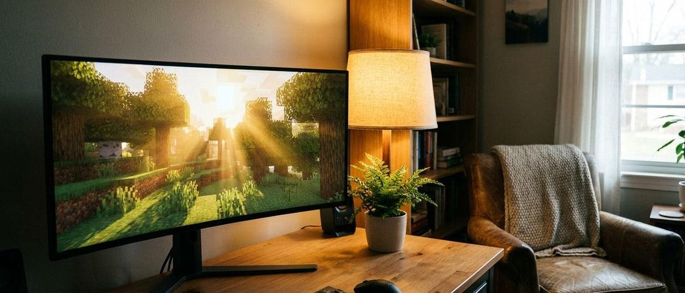
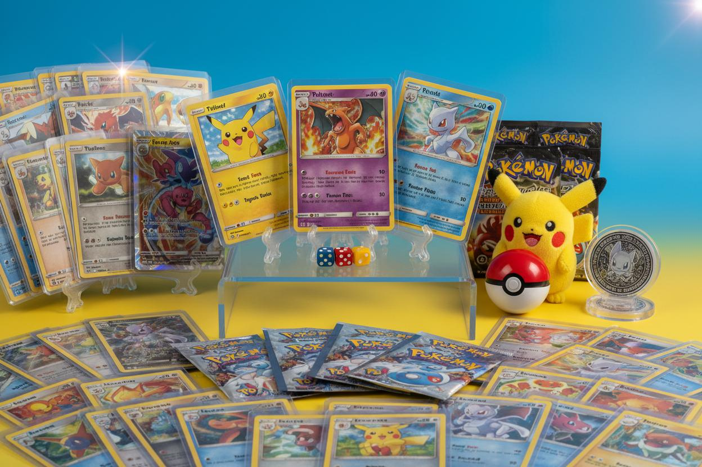
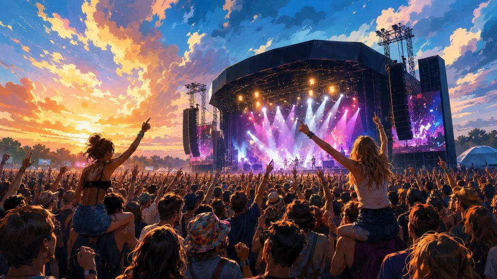

Een van mijn grootste hobby's is gamen. Ik game heel graag, vooral samen met mijn vrienden. Voor mij is gamen een leuke manier om tijd met elkaar door te brengen en plezier te maken. We kunnen samen lachen, nieuwe dingen ontdekken en elkaar helpen tijdens het spelen. Het is ook een goede manier om contact te houden met vrienden, zelfs wanneer we elkaar niet in het echt zien. Ik game vooral om te ontspannen. Na een drukke dag vind ik het fijn om even achter mijn computer te zitten en mijn gedachten te verzetten. Ik hoef niet altijd competitief bezig te zijn of te proberen om de beste speler te worden. Ik vind het juist leuk om rustig te spelen en op mijn eigen tempo vooruitgang te maken. Daarom speel ik graag sandboxgames en automationgames. Sandboxgames geven mij veel vrijheid. Ik kan zelf bepalen wat ik bouw, hoe ik speel en welke doelen ik voor mezelf stel. Dat vind ik leuk, omdat ik mijn creativiteit kan gebruiken en telkens iets nieuws kan proberen. Automationgames spreken mij dan weer aan omdat ik graag systemen bouw en dingen steeds efficiënter probeer te maken. Het geeft voldoening wanneer alles uiteindelijk goed samenwerkt.

Naast gamen verzamel ik ook graag Pokémonkaarten. Wat mij vooral aantrekt, is hoe mooi de kaarten eruitzien. Sommige kaarten hebben prachtige illustraties, speciale kleuren of glanzende effecten. Ik vind het leuk om verschillende kaarten te bekijken en mijn collectie langzaam uit te breiden. Het gaat voor mij niet alleen om de waarde van de kaarten, maar vooral om het plezier dat ik eraan beleef. Ik vind het verzamelen interessant omdat er zoveel verschillende kaarten bestaan. Iedere kaart heeft een eigen afbeelding en uitstraling. Daardoor is er altijd wel iets nieuws dat mijn aandacht trekt. Wanneer ik een kaart tegenkom die ik bijzonder mooi vind, geeft dat mij extra motivatie om mijn verzameling verder aan te vullen. Ik hoef niet per se de zeldzaamste of duurste kaarten te hebben om ervan te genieten. Daarnaast verzamel ik ook figuren. Die verzameling is wat gevarieerder dan mijn Pokémonkaartenverzameling. Ik vind het leuk om verschillende soorten figuren te hebben, omdat ze allemaal iets anders uitstralen. Sommige zijn vooral mooi om naar te kijken, terwijl andere mij aanspreken door hun ontwerp of het personage dat ze voorstellen. Ik vind het fijn om mijn verzamelingen te kunnen bekijken en mijn eigen interesses erin terug te zien.

k ga ook graag naar een fuif of een festival. Ik vind het leuk om muziek te beleven, samen met vrienden op stap te gaan en nieuwe herinneringen te maken. Op zulke evenementen hangt er vaak een gezellige sfeer en kan iedereen genieten van de muziek. Het is een fijne afwisseling met mijn andere hobby’s, waarbij ik meestal thuis bezig ben. Dit jaar ben ik al naar Pukkelpop en Rock Werchter geweest. Dat zijn twee bekende festivals waar veel mensen samenkomen om naar verschillende artiesten en muziekgenres te luisteren. Ik vind het leuk dat je op festivals verschillende soorten muziek kunt ontdekken en dat er altijd iets te beleven valt. Bovendien is het een mooie gelegenheid om samen met vrienden een leuke dag of avond te hebben. Ik ga waarschijnlijk nog vaker naar fuiven en festivals in de toekomst. Het lijkt mij leuk om nog meer evenementen te bezoeken en nieuwe ervaringen op te doen. Voor mij draait het vooral om de sfeer, de muziek en het samenzijn met andere mensen.

Hoewel gamen, verzamelen en festivals bezoeken op het eerste gezicht heel verschillend lijken, hebben ze voor mij toch iets gemeen. Ze zorgen ervoor dat ik mijn vrije tijd op een leuke manier kan invullen. Bij gamen kan ik ontspannen en creatief bezig zijn, bij het verzamelen kan ik genieten van mooie ontwerpen en bij festivals kan ik muziek beleven en plezier maken met vrienden.
| Hobby | Wat vind ik er leuk aan? | Met wie? |
|---|---|---|
| Gamen | Ontspannen, creatief bezig zijn en plezier maken | Vooral met vrienden |
| Pokémonkaarten en figuren verzamelen | Mooie kaarten en figuren ontdekken en mijn collectie uitbreiden | Vooral alleen |
| Fuiven en festivals | Genieten van muziek, de sfeer en nieuwe herinneringen maken | Met vrienden |